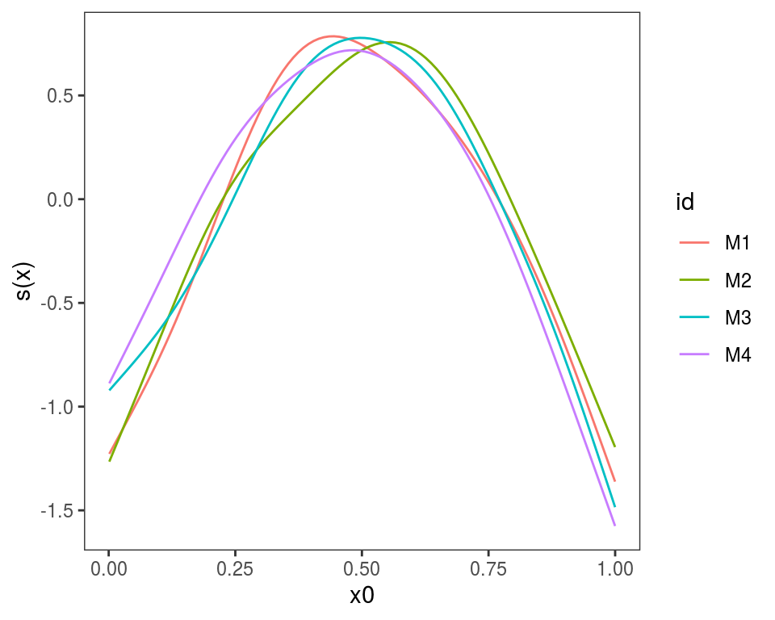
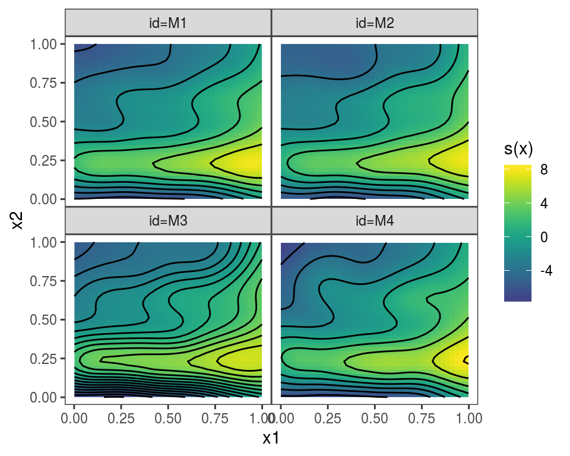

Miscellanea: things you can do in mgcViz
Matteo Fasiolo
June 20 2019
Source:vignettes/miscellanea.Rmd
miscellanea.RmdThe purpose of this document is detailing a number of potentially useful things you can do in mgcViz.
Plotting effects of GAM models fitted on different data
Often we want to fit the same GAM model (same formula) to different data, or to the same data but using different tuning parameters. If we have fitted M models, we might want to plot the M version of each effect in the same plot. This can by done using plot.mgamViz, which takes as input a list of GAM models (again, the model formula must be that same). Here we simulate M=4 data sets:
library(mgcViz) # version 0.1.2 or later
M <- 4
n <- 1000
dat <- list()
for(ii in 1:M){
dat[[ii]] <- gamSim(1,n=n,dist="normal",scale=ii) # Notice that scale = ii
}We estimate M models and we put them in a list:
# Estimating model on each dataset
mods <- list()
for(ii in 1:M){
mods[[ii]] <- gamV(y~s(x0)+s(x1, x2)+x3, data = dat[[ii]])
}We give names to the list, which will be used to identify the plotted effects, and we plot:
names(mods) <- c("M1", "M2", "M3", "M4")
plot.mgamViz(mods, select = 1)
plot.mgamViz(mods, select = 2)## Warning in f(...): Raster pixels are placed at uneven horizontal intervals
## and will be shifted. Consider using geom_tile() instead.## Warning in f(...): Raster pixels are placed at uneven vertical intervals
## and will be shifted. Consider using geom_tile() instead.
plot.mgamViz(mods, select = 3, allTerms = TRUE) Alternatively, we could use
Alternatively, we could use plot(getViz(mods)) to convert the list to an object of class mgamViz. We can also use custom layers: